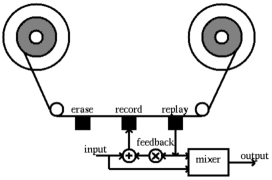
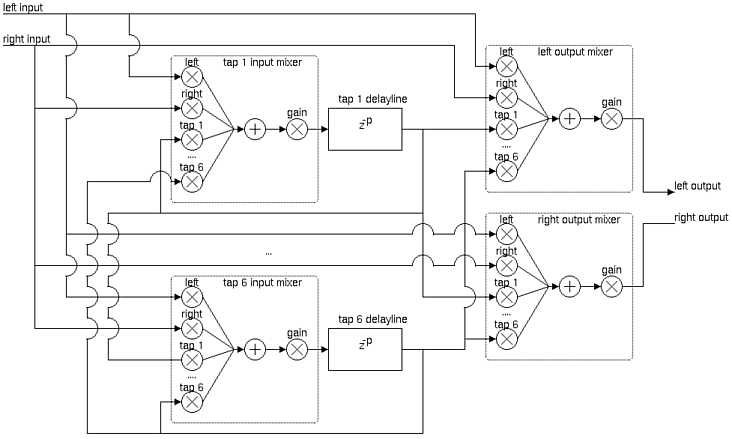
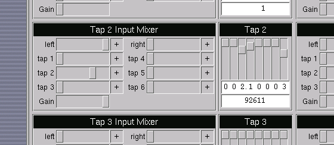

TAPIIR, A SOFTWARE MULTITAP DELAY
Maarten de Boer
Audiovisual Institute
Pompeu Fabra University
Barcelona, Spain
maarten@resorama.com
ABSTRACT
The use of delays is one of the oldest techniques for effects processing and
electro-acoustic composition[1]. Originally, tape-loops were used to create
effects of echo and reverb. Nowadays, most hardware effect processors provide
digital implementations. These have a clearly superior sound-quality compared
to tape-delays, but also imply some restrictions. Delay-length is limited by
the internal memory, and delay time accuracy is often sacrificed for
computational efficiency or even deliberately restricted for
user-interfacing.
This paper presents a dedicated software implementation of a flexible multi-delay, that aims to combine flexibility and high accuracy with high quality audio and usability. At the same time, several important issues in software effect processing will be addressed.
This article appears in Proceedings of the COST G-6 Conference on Digital Audio Effects (DAFX-01), Limerick, Ireland, December 6-8, 2001
HISTORY
Before the use of digital delays, echo facilities were provided by tape delay
systems, which often were modified conventional tape recorders. Tape recorders
have three heads, a erase, a record and a playback head. The echo effect was
obtained by playing back the signal that was being recorded immediately. The
time interval between record and playback was determined by the distance
between the two heads and the speed of the tape.

Figure 1. Tape delay.
More complicated effects could be reached by the use of feedback - passing the
output from the playback head back into the recording channel through a
feedback level control - and the use of multiple playback heads, placed in a
row at different positions along the tape. The studio of Cologne was equiped
with such a device, and Schaeffer's Morphophone is another example. The use of
tape delays has been used widely and for a long period of time by
electro-acoustic composers, both in electronic pieces and musique
concrète. Another process involving tape recordings is the use of tape
loops, which could be used to infinitely repeat a sound or phrase. Steve
Reich's Its Gonna Rain (1965) is one of the most known examples, and
uses this technique in extremis. A musical experience is created by playing two
tape loops of the same recording with a slightly different length, where the
effect starts of as phasing, and than gradually changes into echo.
These techniques were not only used in studio recordings, but also for live
performances. Stockhausen's Solo (1966) is a work for a melody
instrument and a complex tape feedback system, where four assistents control
six playback heads along a tape of several feet length. Outback is played back
on speakers and fed back into the tape.
A direct descendent of the Morphophone, the Copycat, could be used to create
more complex echo effects and even reverbation, with the use of five playbacks
placed on a tapeloop to produce irregular patterns of delays.
One would expect that digital techniques made these tape techniques obsolete.
This is often the case, as standard digital effects processors provide delays,
echo's and reverbation. However, they also have limitations, which makes them
less flexible than the tape delays, and which even inhibit some of the
techniques described above.
TAPIIR
Description
TAPIIR internal processing modules consist of six delay-lines, each with a
mixer at it's input and a gain control at it's output, and a stereo output
mixer. Stereo input from an external source, typically a musical instrument, is
routed to all input mixers. In addition to this, the output of each delay line
is also routed to the input mixers of all delay lines, including itself. Figure
1 shows the diagram of TAPIIR's internals.
This cross-feeding of audio signals throughout the system of delay-lines and
mixers, allows the user to create a very large variety of stereo delay effects.
Very simple echos or ping-pong effects can be achieved easily, but more complex
effects such as early reflection echo's, reverbs, complex rhythmic and
arrhythmic patterns and even Karplus-Strong like synthesis is also possible. It
is important to observe, that these more complex effects are only possible by
using sample accurate processing.

Figure 2. TAPIIR flow diagram.
Sample accuracy
Conventional hardware effect processors are often rather limited in the lenght
of there delay-lines. It is unusual to encounter accuracy higher than 1 msec,
and even 10 msec is used frequently, and maximum delay-lenght are limited as
well.
Obviously, this limitation in hardware effect processors is deliberate, both
out of technical concerns or marketing. Most users are not interested in higher
accuracy, and the standard user interface of hardware effects processors -
buttons or at the most an alpha-dial - would make it a painful job to adjust.
Also, one can imagine that lower accuracy means less computational cost, and
therefore lower overall cost of the effect processing hardware.
For advanced users however, this limitation can be annoying. Of course, many of
the effects obtained with very short delay times, such as reverb or filtering,
are usually also implemented in the same hardware, but it can be very
interesting to combine all these with longer delay-time effects; it would be
necessary to use several processors connected together to do this.
The implementation of TAPIIR, however, is sample accurate. This means that
extremely short delay times can be used, 0.023 msec when using a sample-rate of
44100 Hz. In addition to this fine control over delay-lengths, the sample
accuracy is also implented for feedback and even cross-feeding between the
various delay-lines, This is achieved by the fact that the internal
processing core of TAPIIR is written in such a way, that the input and output
values of the delay-lines and mixers are passed on 1 at a time, instead of
buffer-by-buffer.
Filtering with delays
Obviously, the effects obtained by sample accurate processing of delay-lines go
far beyond the simple echo effects. This includes the creation of FIR filters
and - using feedback - IIR filters (this has been the inspiration for the name
TAPIIR). In these cases, the mixer gains function as filter coefficients. This
means that TAPIIR can efficiently be used for filtering, with flexible filter
design. In a future version, TAPIIR could contain a pole/zero editor that
automatically sets the mixer values to create the corresponding filter.
The maximum delay-length that can be achieved is only limited by the physical
RAM memory of the system TAPIIR runs on. To give an example, with 32 MB of free
memory, a total delay-length of more than 6 minutes can be used. While this
might seem rather useless for normal effect processing, it clearly has musical
applications. Several compositions have been written that make use of long
delay times. Originally performed with the use of tape-delays, they could take
great profit of the use of digital techniques for sound quality. The use of
hard disk space with sufficient fast access would take away time limitation
even more.
Delay-length control
The graphical user interface of TAPIIR allows the user to take full advantage
of the delay-length accuracy, but at the same time it tries to maintain
user-friendly and manageable, by offering value-sliders for larger
scales as well. Delay-time can be entered in time in seconds in number of
samples. Sliders control the digits of the delay-length, with an accuracy of 5
decimals. An additional feature is the use of tempo/signature. In that case,
delay-length in not represented in seconds, but in beats, and the sliders
control the subdivision of beats according to the signature. Obviously, in many
circumstances this representation is a lot more useful, in a musical sense,
than time in seconds.

Figure 3. Screenshot of TAPIIR delay control
Single purpose versus flexibility
It is perfectly possible to implement a similar application with one of the
many modular digital audio processing applications that available, such as
jMax, Reaktor, or WaveWarp[2]. However, for
many users an out-of-the-box dedicated application might be a better choice.
Also, most modular approaches imply the use of buffered calculation, which
means they do not allow the sample accuracy discussed above.
The system requirements of TAPIIR have been kept very low, being a
single-purpose application. This makes it perfectly possible to run TAPIIR in
combination with other applications.
Low-latency
For real-time effect processing it is very important that the input/output
latency is small; If the latency is to long it becomes noticeable, and the
produced sound is constantly delayed by the I/O. This is very annoying and it
even obstructs proper instrumental performance, especially in the case for many
delay-based effects, such as creating loops and playing on top of them.
TAPIIR has been implemented on the Linux operating system. Low-latency is a hot issue among many Linux audio developers. Even though Linux is not a true Real-time operating system, it is very suitable for applications that have high scheduling requirements. The multitasking facilities allow time critical tasks such as audio input, output and processing, to be separated from less critical tasks such as file i/o and graphical user interfacing. Linux has not been designed with low-latency audio applications in mind, and the standard time slicing shows this. However, and here we see one of the advantages of open-source software, a patch has been written for the Linux kernel to greatly improve this - you can achieve consistent worse-case scheduling
latencies of 0.5 milliseconds on a 500MHz
machine [3][4].
Linux can be considered the operating system of choice for applications such as
TAPIIR. The other way around, TAPIIR is a nice demonstration application of
Linux' Real-time effect processing capabilities.
Implementation
TAPIIR has been written with the ALSA[5] audio library and
the FLTK[6] GUI library. MIDI interaction is being
implemented. TAPIIR is freely available under the GNU GPL.
The author hopes that TAPIIR will be used by composers and performers, and that
is can facilitate the performance of existing works which otherwise would be
difficult to accomplish.
REFERENCES
- Manning, P., Electronic & Computer Music, Clarendon
Press, Oxford, 1993.
- Jafry, Y., A Modular Real-time PC-based Audio Processing
Tool, Proc. Conference on Digital Audio Effects (DAFX-00), Verona, Italy,
2000.
- Morton, A., Linux Scheduling Latency,
http://www.zip.com.au/~akpm/linux/schedlat.html
- Linux Audio Development homepage,
http://www.linuxdj.com/audio/lad/
- Advanced Linux Sound Architecture,
http://www.alsa-project.org
- FLTK homepage,
http://www.fltk.org